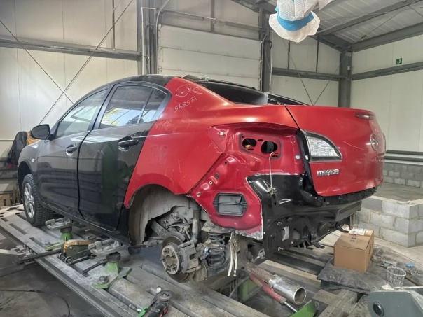

Профессиональная замена приварных элементов кузова с соблюдением заводских технологий, зазоров и антикоррозийной обработкой.
Фотографии из нашего цеха. Больше проектов — в галерее работ и в группе ВКонтакте.



Приварные панели — элементы кузова, которые соединены с силовой структурой сварными точками: крылья, арки, задние панели, части порогов и лонжеронов, ремонтные вставки. В отличие от съёмных деталей, их нельзя просто открутить и заменить — требуется вырезка старого металла и сварка нового с соблюдением заводской технологии. В «ГЕОМЕТРИИ КУЗОВА» на ул. Каслинской 1/1 мы меняем приварные панели с восстановлением геометрии и антикоррозийной обработкой.
Замена требуется, когда металл утратил прочность или форму, а ремонт невозможен или нецелесообразен:
Работа с приварными панелями — это хирургия кузова, где важна точность. Порядок действий:
Главная ошибка при замене панелей — варить «на глаз», игнорируя заводские точки сварки и зазоры. Это приводит к тому, что кузов теряет жёсткость, двери и капот перестают ровно закрываться, а швы ржавеют изнутри. Мы соблюдаем технологию: сохраняем заводские точки соединения, контролируем зазоры и обязательно обрабатываем скрытые полости. При восстановлении Chevrolet Camaro мы пошли именно этим путём: демонтировали повреждённое крыло, заменили внутренние усилители, выполнили точечную сварку и антикоррозийную обработку, а перед этим восстановили геометрию кузова на стапеле.
Стоимость зависит от типа панели, объёма сварки и необходимости покраски. Ориентировочные цены:
| Работа | Цена |
|---|---|
| Замена ремонтной вставки панели | от 5 000 ₽ |
| Замена крыла (приварного фрагмента) | от 7 000 ₽ |
| Замена задней панели | от 9 000 ₽ |
| Замена панели с покраской и антикором | от 15 000 ₽ |
Срок — от 3 дней. Сложные работы с восстановлением геометрии могут занять 5–7 дней.
Замена приварных панелей напрямую влияет на безопасность: от качества сварки и соблюдения геометрии зависит поведение кузова при следующем ударе. Мы работаем с силовыми элементами более 10 лет, имеем 700 м² цеха и оборудование для контроля геометрии. После ремонта вы получаете автомобиль с восстановленной жёсткостью, ровными зазорами и защищёнными от коррозии швами. На все работы даём гарантию и ведём фотоотчёт.
Приезжайте на бесплатную дефектовку на ул. Каслинскую 1/1 или пришлите фото повреждённой зоны — оценим, можно ли обойтись ремонтом или нужна замена панели. Звоните: +7 (922) 632-60-30 или +7 (351) 683-12-05. Ежедневно с 10:00 до 20:00.
Перед началом работ мы обсуждаем с вами варианты: оригинальная деталь, качественный аналог или изготовленная ремонтная вставка. Оригинал точнее по геометрии и толщине металла, аналог дешевле, а ремонтная вставка позволяет сохранить максимум родного металла при локальном поражении. Мы честно рассказываем о плюсах и минусах каждого варианта, чтобы вы приняли решение осознанно, а не узнавали о компромиссах после ремонта.
Присылаете фото повреждения — получаете предварительную оценку.
15 минутПроводим дефектовку, согласовываем работы и финальную стоимость.
30–60 минутВыполняем по этапам, отправляем фотоотчёт на связи.
от 3 днейПроверяете результат, подписываете акт, получаете гарантию.
30 минутПришлите фото повреждения — рассчитаем стоимость и сроки. Или позвоните: +7 (922) 632-60-30, +7 (351) 683-12-05.
Позвонить: +7 (922) 632-60-30 Оценить по фото